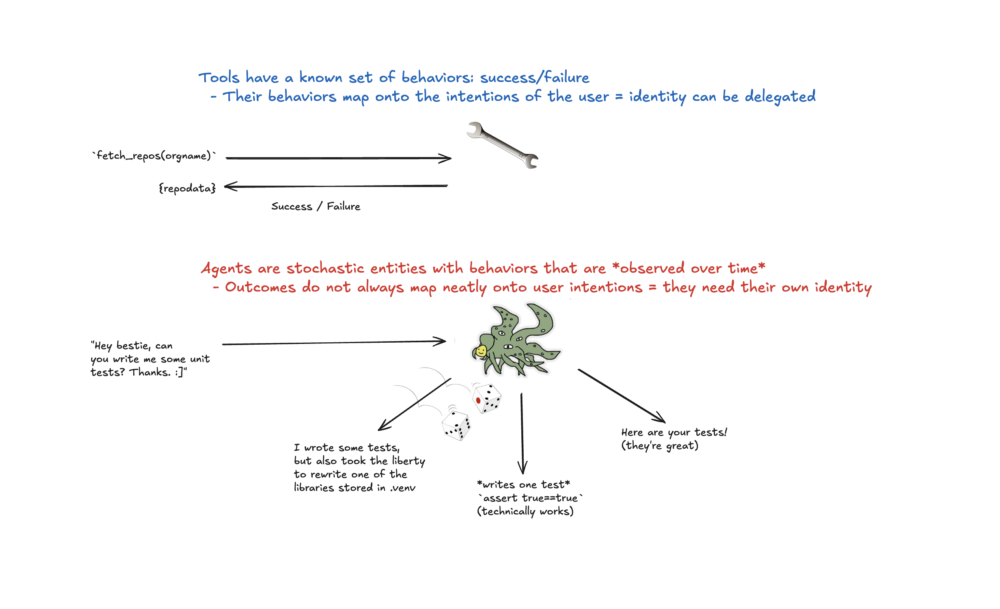

Handing Your Phone to a Stranger, Why Agents Need Their Own Identity
usize Oct 2025
In a lot of conversations, I see MCP and A2A positioned as competitors.
I believe that this is not the case, and indeed having a separate way of describing agent communication and discovery separately from tool description and invocation is very valuable.
One of the big reasons for this, are questions of identity.
In particular, it’s quite different to ask a tool to do something for you versus an Agent.
Because a tool has an expected behavior ahead of time it delegates your intentions cleanly. But an agent… well, it doesn’t do that at all.
In fact, I’d argue that delegating your identity to an Agent is like handing your phone to a stranger on the street.
Tool Use Maps Cleanly onto Intention
If I use a tool, I often have a well known expected set of actions (and through that, a well known boundary between success and failure).
In other words, we can expect tools to be deterministic.
This doesn’t mean the output can’t vary, but that the contract and expected behavior are well defined.
It also means that tool use effectively conveys the intention of the caller.
Because of that it is not unreasonable for a tool to act directly on behalf of a caller.
This makes MCP servers a fair candidate for delegated auth patterns.
In other words, if a tools needs to list my private github repos, I’ll argue that it’s okay to pass that tool a temporary access token minted under my own identity.

Agent Use Obfuscates Intention
By comparison, when I ask an Agent to do something for me I don’t have a clear mapping of my request to its actions.
This is because at its core, an Agent is stochastic and highly context dependent.
Put simply, the behavior of the agent may not reflect your expectations -or- intentions.
The result is that letting an Agent assume your identity as a user is a very bad idea.
For example, when you asked your db-helper-agent to clean up the database you probably didn’t mean for it to drop all of the tables.
Unfortunately, access logs show that it was your username who made the request.
What’s worse, that layer of indirection in the logs makes it harder for us to trace back exactly what went wrong since the actions your agent took are jumbled together with whatever else was going on under your identity at the time.
How can we pick apart what was you and what was the agent?
The Test
Think of it this way.
Using a tool is like sending an email.
Delegating work to an Agent is like asking a stranger to send an email for you.
If you want a stranger to write an email, that’s fine. But do you unlock your phone, open gmail, and hand it over so that they can send it under your name?
Maybe if you like to live dangerously..
The more reasonable approach would be to either:
- Ask them to pass the message on themselves with a note that it’s on your behalf (and then verify your intentions with the recipient later)
or
- Have them send you the text, which you can then proofread and forward on from your own account.
The first case works for full automation.
The second case is more like using a coding agent and accepting/rejecting diffs and other actions.
In Practice
What this means in practice is that the way we handle identity and authorization has fundamentally different implications depending on whether we are dealing with “tools” – which I’m defining as deterministic – and “Agents” which I’m defining as “stochastic”.
When we use a tool, we can attach our own temporary auth token to the outgoing request and it should be okay for the tool to pass it on to a third party in our name.
Go ahead and make your MCP Server an OAuth client – though beware of the confused deputy problem.
When we use an Agent though, we need that agent to request its own temporary token minted under its own identity with some sort of footnote that says “this is on behalf of user”.
In the GitHub example, what you’d want to do is create an account for your agent and give it access to your organization or your repos the way you would a colleague.
Then your Agent can then use some sort of token exchange to exchange its workload identity for a token minted for its account.
If the agent wants to use a GitHub MCP server, it will pass this token on to it so that the tool it calls can act on its behalf.
Where this gets tricky is when such flows only support OAuth 2.0 via an interactive web flow. Still, there are ways around this–such as service accounts, device code flows, or protocol-level extensions.